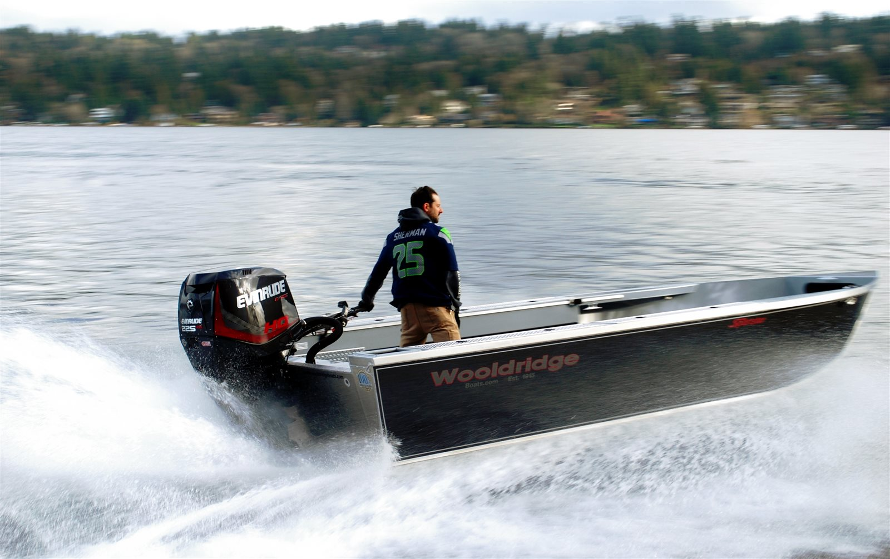

Sportster

Fast, refined, capable. The Sportster is the outboard jet sportster — a super-wide, big-freeboard river hull with the Wooldridge jet tunnel, offered as an open center console or full windshield boat.
See it on the water
We’re putting this model in front of the camera. In the meantime our channel is full of walkthroughs, on-water tests, and how-tos from the Wooldridge fleet.
YouTubeVisit @WooldridgeBoatsStandard features
Hull & Structure
- Limited Lifetime Hull Warranty to original buyer
- Wooldridge Full Support Structure System
- Reinforced impact chine
- Extended bottom trim plate
- .190″ Transom and bottom
- .500″ Delta pad
- Meets USCG standards
- Welded bow and stern eyes
- Welded sport rails
- Walk-around gunnels with non-skid
- Diamond-plate bow cap
- Recessed self-bailing bow deck
- Transducer bracket
- Dual drain holes and plugs
Fuel System
- Built-in, under-floor aluminum fuel tank, baffled
- Secondary fuel feed-off tank for kicker fuel
- Fuel / water separator
- Backlit fuel gauge
Interior & Exterior Features
- Diamond-plate swim steps on transom
- Diamond-plate aluminum floors
- Full-length welded side trays with carpet
- Rod grippers in side trays
- Stand-up gunnels with toe kick
- UV-treated vinyl exterior graphic
- Storage under front step deck with locking door
- Large two-piece, walk-through windshield
- Two Navi High-Back upholstered seats for driver and passenger (bench seating optional)
- Two all-welded aluminum lockable storage boxes
Helm & Electrical
- 1000 MCA battery, box, and tray
- 6-switch panel power-source, with sealed switches and fuses
- LED navigation / running lights
- 12V power plug
- Dual USB / USB-C charger plug
- 1,250 GPH bilge pump
- Electric horn
- Garmin 743xsv full engine instrumentation display
- Windshield wiper for driver’s side
- Welded dash with cable steering system
Pricing & power
Condensed for easy browsing — expand a section for the full tables, or build yours for a live, complete quote.
2026 Base PricingHull & configuration pricingfrom $62,999
Base boat before power, trailer, freight, and options. Build yours for a complete, current quote.
| Model | 2026 Base Price |
|---|---|
| 21′ Sportster — Open Center Console52-gallon tank | $62,999 |
| 23′ Sportster — Open Center Console52-gallon tank | $64,999 |
| 25′ Sportster — Open Center Console52-gallon tank | $66,999 |
| Model | 2026 Base Price |
|---|---|
| 21′ Sportster — Windshield52-gallon tank | $67,999 |
| 23′ Sportster — Windshield52-gallon tank | $69,999 |
| 25′ Sportster — Windshield52-gallon tank | $71,999 |
Power Options — 2026Available powerfrom $27,535
Boat is priced before power; each package includes motor, jet, and required rigging. Availability varies by length and configuration — the configurator shows exactly what fits your build.
| Engine Package | Price |
|---|---|
| Yamaha F200XD 4-stroke with jetIntegrated hydraulic steering | $27,535 |
| Mercury 200XL 4-stroke with jet | $27,750 |
| Mercury 200XL Pro XS 4-stroke with jet | $29,374 |
| Yamaha VF200XB VMAX 4-stroke with jet | $27,975 |
| Yamaha VF250XB VMAX 4-stroke with jet | $31,260 |
Photo gallery
The outboard jet Sportster — open console and windshield builds running the lake. Tap any photo to view it full size.


Prices subject to change — contact Wooldridge Boats directly for an official quote. Limited Lifetime Hull Warranty to the original buyer.